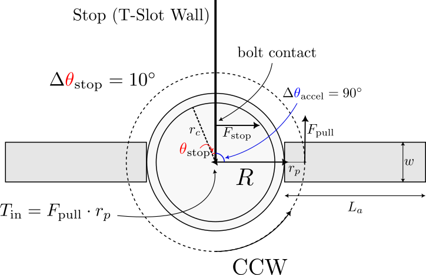
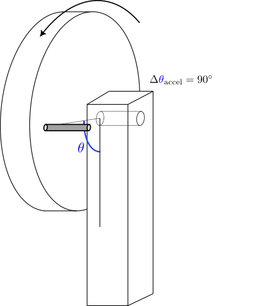
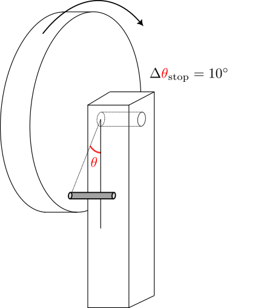
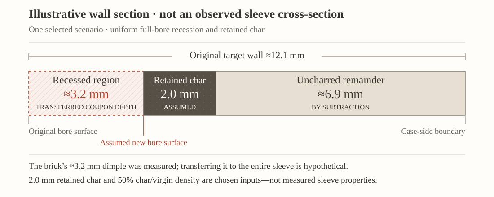
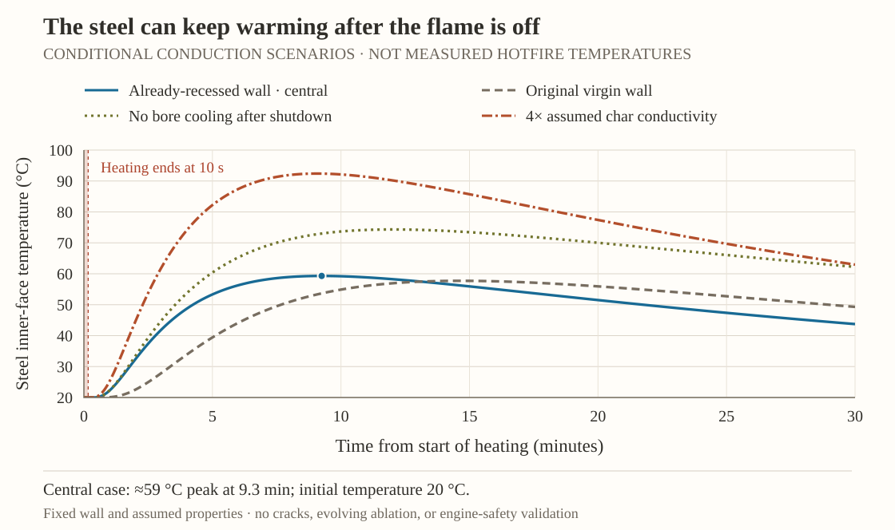

For Liquid Rocketry at Illinois, this project combined a remotely operated sample holder with a torch-based heat test. Graphite served as a reference alongside ChamberSafe samples, with temperature readings from the back of the graphite used to estimate heat input. The work covered both fixture design and interpretation of the test data.
Can reliable heat tests help us build confidence that our liquid rocket engine won’t melt during a test firing?
Initial Design
The bungee return drove the holder into its stops, permanently bending the bolts after a few cycles. Screwdriver pins seated inconsistently, and the layout could expose the operator to the torch plume.
The redesign needed to:
Limit impact loads on the bolts.
Increase the operator’s distance from the torch plume.
Use fixed stops for repeatable sample alignment.
Rotating Gear Design
Mechanically indexed rotating disk with bolt alignment and T-slot hard stops
I designed a cable-operated rotating disk for repeatable sample changes while keeping the operator away from the torch. Alignment bolts position the samples, and T-slot walls stop rotation at 180°.
Repeated cycling permanently bent the clamping bolts even at lower speeds, pointing to peak torque as the main failure driver and reducing alignment and test repeatability.
Demonstration
Simplified Model

A simplified, free-body diagram of the test setup

Free-body diagram at start position

Free-body diagram illustrating the impact compliance
I modeled the disk, bolts, and cables to relate cable force and disk radius to bolt stress. Assuming a rigid disk and balancing torque at the bolt contacts, I calculated allowable cable forces from bolt geometry and yield strength to prevent permanent bending and maintain repeatable sample positioning.
Impact (slam) speed limit Assume one bolt takes the full stop load (worst-case). If the disk impacts the stop at angular speed \(\omega\) (rad/s), the rotational kinetic energy is \[
E_k=\frac{1}{2}\frac{I}{g_c}\,\omega^2,
\] where \(I\) is the mass moment of inertia in \(\mathrm{lbm\cdot in^2}\) and \(g_c=386.09~\mathrm{\frac{lbm\cdot in}{lbf\cdot s^2}}\).
Assuming the stop dissipates this energy over the compliance angle \(\Delta\theta_{\text{stop}}\), and using a linear torque ramp \((T_{\text{peak}}\approx 2T_{\text{avg}})\), \[
T_{\text{stop,peak}}\approx \frac{2E_k}{\Delta\theta_{\text{stop}}}.
\] Convert peak stop torque to bolt bending stress (threads in bending): \[
\sigma_{\text{bolt,peak}}
=
\frac{32}{\pi d_{\text{minor}}^3}
\left(\frac{T_{\text{stop,peak}}}{r_c}\right)
L_{\text{bolt,eff}}.
\] Combining all terms gives the relationship between impact speed and bolt stress: \[
\sigma_{\text{bolt,peak}}
=
\left(
\frac{
32 I L_{\text{bolt,eff}}
}{
\pi d_{\text{minor}}^3
\Delta\theta_{\text{stop}}
r_c
g_c
}
\right)\omega^2.
\]
Numerical evaluation Using \(I = 351.352~\mathrm{lbm\cdot in^2}\), \(g_c = 386.09~\mathrm{\frac{lbm\cdot in}{lbf\cdot s^2}}\), \(\Delta\theta_{\text{stop}}=\pi/18\), \(r_c=3.75~\mathrm{in}\), \(L_{\text{bolt,eff}}=2.75~\mathrm{in}\), \(d_{\text{minor}}=0.19~\mathrm{in}\), the stress law reduces to \[
\sigma_{\text{bolt,peak}}
\approx
5678\,\omega^2~\mathrm{psi}
=
5.678\,\omega^2~\mathrm{ksi},
\qquad
(\omega \text{ in rad/s}).
\]
Grade 2 “no-yield” speed Assume Grade 2 yield strength \(S_y \approx 57~\mathrm{ksi}\). If “do not yield” means \(\sigma_{\text{allow}}=57~\mathrm{ksi}\), \[
57 = 5.678\,\omega^2
\quad\Rightarrow\quad
\omega_{\max}=3.17~\mathrm{rad/s}.
\] Convert to RPM: \[
N_{\max}
=
\omega_{\max}\frac{60}{2\pi}
=
30.3~\mathrm{rpm}.
\] \[
N_{\max}\approx 30~\text{rpm at the moment of impact}.
\]
Recommended engineering limits (with safety factor) If instead \(\sigma_{\text{allow}}=\frac{S_y}{n_y}\), then: - For \(n_y=2\): \(N_{\max}\approx 21.4~\mathrm{rpm}\). - For \(n_y=3\): \(N_{\max}\approx 17.5~\mathrm{rpm}\).
A conservative operating recommendation is therefore: \[
\text{Keep impact speed } \lesssim 17\text{ to }20~\mathrm{rpm}.
\] \[
20~\mathrm{rpm} \approx 0.333~\mathrm{rev/s}.
\]
At \(20~\mathrm{rpm}\) (\(0.333~\mathrm{rev/s}\)), the disk rotates at about \(120^\circ/\mathrm{s}\). A \(90^\circ\) index move at that steady rate takes roughly:
\[
\boxed{t \approx 0.75~\mathrm{s}.}
\]
Although this is a “moderate” motion, you should consciously slow down as you approach the hard stop. Bolt yielding is driven by the impact speed at contact (i.e., \(\omega\) right before the stop), not the average speed over the full rotation.
Explore the Motion
How much does slowing the disk change the bolt’s response? Adjust the impact speed and geometry, then follow one material point at the bolt’s outer bending surface through the load cycle. The motion sketch, stress–strain curve, and yield plots share the same state.
The interactive explorer requires JavaScript. At the dimensions above, the elastic estimate is 5.678ω² ksi and first yield is approximately 3.17 rad/s (30.3 rpm). This estimate is not a fatigue-life or post-impact deformation prediction.
Process
Final torch-based setup for graphite-reference and ChamberSafe testing.
Testing revealed unstable torch mounting, unwanted heat loss through fixtures, and heat transfer between successive samples.
Advisor-guided revisions added a rigid multi-point torch mount, steel sliding rails, silica-cloth insulation, and embedded thermocouples. The new setup maintained torch alignment when switching between graphite reference and test samples and reduced unintended heat loss.
I waterjet-cut the sample extenders and rotating disk from low-carbon steel.
Preparation, labeling (Batch#_Sample#), disk-extender integration, and final bolted installation of ablative bricks.
1D transient heat-conduction model
The graphite model predicts back-face temperature from heat flux; fitting it to measurements estimates the constant pulse amplitude, \(q_0\).
The slab has thickness \(L = 0.02362\ \mathrm{m}\) (0.93 in) and constant \(k = 130\ \mathrm{W/(m\,K)}\), \(\rho = 1850\ \mathrm{kg/m^3}\), and \(c = 700\ \mathrm{J/(kg\,K)}\), with heat flowing from \(x=0\) to the back-face thermocouple at \(x=L\):
\[
\rho c\,\frac{\partial T}{\partial t}
= k\,\frac{\partial^2 T}{\partial x^2},
\qquad 0 \leq x \leq L
\]
The hot face receives a nominal three-second rectangular heat pulse. Silica cloth covers the back-face sensor region, motivating an adiabatic back boundary over the early fitting window. The initial temperature is uniform:
\[
q(t)=
\begin{cases}
q_0, & 0 < t < 3\ \mathrm{s},\\
0, & t \geq 3\ \mathrm{s}.
\end{cases}
\]
A useful hand check is the diffusion time: \(\alpha=k/(\rho c)\approx 1.00\times10^{-4}\ \mathrm{m^2/s}\), so \(L^2/\alpha\approx5.6\ \mathrm{s}\). The three-second exposure is therefore transient; a steady-state temperature gradient would not describe this experiment.
Inferring heat flux from back-face temperature
The model uses Crank–Nicolson, 101 spatial nodes, and 0.01 s steps.
Baseline subtraction cancels the TC-2 offset, giving \(\Delta T_{\mathrm{corr}}=1.0129\Delta T_{\mathrm{raw}}\).
The fit minimizes squared error between modeled and measured back-face temperature rises over the first 3.5 s after detected onset:
Because the constant-property model is linear in flux amplitude, only one reference simulation is needed. Let \(\Delta T_{\mathrm{ref}}\) be the response to \(q_{\mathrm{ref}}=1\ \mathrm{MW/m^2}\). Scaling that response gives a closed-form estimate, with the reference flux retained explicitly for consistent units:
The flux history is restricted to a single pulse amplitude; the report does not reconstruct a general time-varying flux or apply an explicit regularization penalty. It also does not report a confidence interval for the fitted flux.
Calibration results and thermal dose
The two graphite fits infer effective net inward heat fluxes of 0.2592 and 0.5844 MW/m². The hot torch condition is about 2.25 times the baseline condition under this model. These are inferred reference-specimen fluxes, not directly measured incident torch fluxes.
Three-second graphite checks and paired ChamberSafe exposures
Hot-condition inverse fit, reproduced from Figure 4. Its larger 3.02 °C fit error also shows the mismatch between the simplified model and measured response.
Baseline and hot conditions on the same axes. Measured bands are approximately digitized from the two figures above; dashed fits are reconstructed from the report’s 1D model and fitted fluxes. Shading shows the model-to-model difference, not an uncertainty band.
For each specimen's own exposure window, thermal dose is energy per unit area. Holding the graphite-fitted flux amplitude constant throughout that window gives the proxy:
Applying each graphite-derived flux to its paired ChamberSafe exposure gives about 5.18 MJ/m² for 20 s at baseline and 5.84 MJ/m² for 10 s at the hot setting. The estimated doses differ by about 13%, despite the twofold difference in exposure time.
Outcome
Making the torch conditions repeatable
Resetting the acetylene torch between tests proved difficult without a working pyrometer or a calibrated thermal preset. We selected the torch’s valve settings manually, without a verified setting corresponding to our intended reference: the engine’s approximately 3,000 K combustion-gas temperature. The graphite fits later indicated substantially different heating conditions—0.2592 versus 0.5844 MW/m² of effective net inward heat flux, about a 2.25× difference. The paired ablative exposures lasted 20 and 10 seconds, respectively, so their graphite-equivalent doses were 5.184 and 5.844 MJ/m², only 12.7% apart. The comparison highlights the need to control heating intensity as well as exposure time; it does not isolate valve settings as the sole cause of the difference.
For future tests, we would keep the same rotating-disk setup with the graphite reference and ablative sample. The torch would first impinge on the graphite while a calibrated, appropriately rated surface pyrometer monitors its heated face. We would establish a prescribed reference-temperature band and stabilization interval, checked against an independent heat-flux calibration, rather than rely on knob position alone. Once those criteria are met, we would rotate the disk to place the ablative sample in the same torch position without readjusting the flame, then record the timed exposure. Torch settings, standoff, alignment, and the graphite’s initial temperature and thermal history would be recorded and controlled.
The graphite provides the radiating target for this surface-temperature measurement; the pyrometer does not directly measure the torch’s heat flux or combustion-gas temperature. Simply waiting for a 3,000 K reading would therefore not establish engine-equivalent heating. Any such graphite-surface setpoint would first need validation against the required heat flux, instrument range, and specimen/fixture limits. Emissivity, viewing spot, and radiation from the intervening flame must also be accounted for. See surface pyrometry through flames and NASA’s separate graphite-temperature and heat-flux measurements.
Post-test material observations
The exposed bricks developed darkened surfaces and localized depressions at the torch impingement region. The 10-second hot specimen is on the left and the 20-second baseline specimen is on the right. The photographs document surface condition, but their lighting and viewing angles do not establish which depression is deeper.
The higher-flux, 10-second test has a measured dimple depth of approximately ⅛ inch (3.2 mm) and a reported mass change from 82.8 to 73.9 g—an 8.9 g net loss, or 10.7% of its initial mass. These values are recorded in the team’s test summary; the experimenter confirmed the run association and that the depth was measured. Instrument uncertainty, the depth reference surface, weighing tare, and post-test cleaning remain undocumented. These are brick-test results, not sleeve measurements.
Left: 10 s, hot condition. Right: 20 s, baseline condition. Run identification supplied by the experimenter; no calibrated depth scale is present.
Close-up of the exposed surface.Surface condition with the sample still clamped.Torch position relative to the exposed region.
The campaign report preserves both thermocouple traces and their summary values. The traces use time from the start of each log, not time since flame-on. The original CSV logs have not yet been recovered. The approximate digitization below recovers the visible curves without claiming to recover the original samples.
Report summary and depth evidence
Test
Equivalent dose (MJ/m²)
Reported maximum back-face rise (°C)
Dimple depth
Baseline · 20 s · right
5.18
0.317
No measurement recovered
Hot · 10 s · left
5.84
0.241*
≈3.2 mm; measured, experimenter-confirmed
Maximum rises are over the complete logged windows, not verified exposure-only peaks. *The hot trace appears to peak near 0.21 °C, while Table 6 reports 0.241 °C; the raw log is needed to resolve this discrepancy.
Recovered curves—not recovered raw samples
The 1920 × 1440 source image was calibrated against its axis ticks and separated by curve color. CSVs retain visible horizontal segments and graphical bounds at unresolved transitions. Occluded data stay missing; no smoothing, interpolation, or extra sensor samples are invented. The TC-2 gain is already present in the plotted values and was not applied again.
Digitized from Figure 8—not raw measurements. The graphical reading allowance is approximately ±0.004 °C and ±0.18 s; this is not sensor accuracy or a confidence interval. Inspect the extraction over the unchanged source image.
Quantities recovered from the figure and combined with the reference dose
Quantity
Baseline · 20 s
Hot · 10 s
Visible peak rise (°C)
≈0.317
≈0.214; report table says 0.241
Visible log window (s)
≈0–53.0
≈0–66.6
First resolved rise (time from log start)
≈41.8–42.4 s
Not assigned: baseline chatter
Peak rise / nominal equivalent dose (K per MJ/m²)
≈0.0611
≈0.0366
The normalized peak is only a descriptive ratio across unequal log windows—not conductivity, heat capacity, absorbed-energy efficiency, or a material ranking. Using the graphical allowance and the selected flux/timing variations below gives ranges of 0.043–0.089 and 0.025–0.057 K per MJ/m², respectively; sensor errors are additional. Using the hot report-table value instead gives 0.0412 K per MJ/m². These alternatives are not silently reconciled.
The hot run used about 2.25× the graphite-calibrated flux for half the time, giving only 12.7% more equivalent dose. Its measured ≈3.2 mm dimple gives an exposure-averaged depth change of ≈0.32 mm/s—not an established constant recession rate. The baseline depth is still unknown, so the two runs do not yet establish a measured depth ordering or a depth–dose law. The equivalent doses are reference-based estimates, not measurements of energy absorbed by the bricks.
The hot depth comes from the test record, not from these unscaled oblique photographs. Future measurements should record the original undamaged reference surface and distinguish a depression from a raised char rim. Dimple depth, char thickness, and total mass loss describe different aspects of the material response.
What the data say about thermal properties
The reported temperature rises span only about four to five readout increments (0.0625 °C each before the TC-2 gain correction). Such small signals may reflect insulation, thermal lag, or poor sensor coupling; they do not uniquely determine conductivity, diffusivity, or heat capacity. Those properties remain unmeasured here.
Measured results and conditional material estimates
The hot-test mass and depth are reported measurements; the thermal properties and missing geometry remain conditional. Conductivity and specific heat are inputs—not parameters recovered by fitting the temperature curves. The baseline mass and depth remain assumed. The ranges are selected sensitivity envelopes, not confidence intervals or guaranteed bounds; they omit the unreported measurement uncertainties of the hot-test mass and depth.
Measured and assumed inputs, with their sources
Central scenario · selected range · evidence status
Input
Central value
Selected range
Basis / uncertainty
Width × height × thickness
50.8 × 88.9 × 12.7 mm
48–54 × 85–93 × 10–15 mm
The experimenter confirmed the nominal 2 × 3.5 × 0.5 inch brick size, also supported by the December design review’s mold. Individual specimen measurements are unavailable; these selected ranges are not measured manufacturing tolerances.
Initial mass · baseline / hot
50 / 82.8 g
30–80 g / held at 82.8 g
Baseline: analyst-selected example. Hot: reported initial mass; final mass 73.9 g. Unreported weighing uncertainty is excluded from the sweep, not assumed to be zero.
Specific heat, \(c_p\)
1,000 J/(kg·K)
700–1,500 J/(kg·K)
Analyst-selected constant-property input, not a value verified for this formulation.
Conductivity, \(k\)
0.16 W/(m·K)
0.08–0.32 W/(m·K)
Reuses the assumed value in the project’s earlier semi-infinite calculation. That value has no supporting material measurement; its factor-two range is selected for sensitivity only.
Depression depth · baseline / hot
3 mm assumed / ≈3.2 mm measured
1–5 mm / held at 3.175 mm
Baseline: selected what-if value, not a photo measurement. Hot: approximately ⅛ inch, confirmed measured by the experimenter. The exact unit conversion is retained for arithmetic, not claimed precision; measurement uncertainty is unknown and excluded.
Depression diameter and shape
20 mm; paraboloid
10–30 mm; cone to cylinder
Idealized shape: volume = shape factor × circular area × depth; factor ½ nominal, ⅓–1 in the sweep. Cracks and raised char are not represented.
Uniform heating-footprint diameter
20 mm
10–30 mm
A separate assumption, varied independently of depression diameter. A crater is not a heat-flux footprint.
Exposure · baseline / hot
20 / 10 s
19–21 / 9–11 s
Reported nominal durations; ±1 s is an assumed timing sensitivity, not measured timing uncertainty.
Graphite-reference flux multiplier
1×
0.73–1.33×
The report’s ±20% graphite heat-capacity sensitivity shifts inferred flux by approximately −27% / +33%. This is not a complete heating uncertainty budget or a brick absorptivity factor.
Using those inputs, \(\rho=m/(WHL)\), \(C=mc_p\), and \(\alpha=k/(\rho c_p)\). The diffusivity relation is standard; none of the numerical property inputs is supplied by that relation. See NIST’s material-property guidance, §6.3.1.6.
Original, uniform-brick calculations · central value (selected sensitivity envelope), not a property fit
Derived quantity
Baseline · assumed 50 g
Hot · reported 82.8 g
Bulk density (kg/m³)
872 (398–1,961)
1,444 (1,099–2,029)
Whole-brick heat capacity, \(mc_p\) (J/K)
50 (21–120)
82.8 (58.0–124.2)
Thermal diffusivity, \(\alpha\) (mm²/s)
0.184 (0.027–1.15)
0.111 (0.026–0.416)
Through-thickness diffusion scale, \(L^2/\alpha\)
879 s ≈ 14.6 min Envelope: 2.2–92 min
1,455 s ≈ 24.3 min Envelope: 6.0–95.1 min
The sweep evaluates 4,096 endpoint combinations for the baseline and 1,024 for the hot test, recomputing density from mass and geometry. The hot mass and depth are held at their reported values because their measurement uncertainties are unknown; those uncertainties are omitted, not zero. The wide diffusivity envelopes are consequences of the selected inputs—not experimentally established property ranges. The diffusion time is a characteristic scale, not a predicted first detectable temperature rise. No heating boundary, char evolution, or sensor response is fitted.
Conditional test comparison · central value (selected envelope)
Quantity
Baseline · 20 s
Hot · 10 s
Equivalent dose (MJ/m²)
5.18 (3.60–7.24)
5.84 (3.84–8.55)
Equivalent energy over assumed heating footprint (kJ)
1.63 (0.28–5.12)
1.84 (0.30–6.04)
Diffusion length scale, \(\sqrt{\alpha t}\) (mm)
1.92 (0.72–4.91)
1.05 (0.49–2.14)
Depth / exposure (mm/s)
0.150 (0.048–0.263); assumed depth
0.318 (0.289–0.353); measured depth, timing sensitivity only
Depth / equivalent dose (mm per MJ/m²)
0.579 (0.138–1.391)
0.543 (0.371–0.827)
Idealized depression volume (cm³)
0.471 (0.026–3.534)
0.499 (0.083–2.244)
Virgin-density-equivalent depression mass (g)
0.411 (0.010–6.930)
0.720 (0.091–4.555)
Reported whole-specimen net mass loss
Unknown
8.9 g (10.7%); uncertainty not reported
The hot depth divided by exposure is ≈0.32 mm/s; the baseline’s 0.15 mm/s still comes from an assumed depth. These are not two measured rates. The hot dimple’s conditional geometric mass equivalent is ≈0.72 g, compared with the reported 8.9 g net specimen loss. The assumed diameter and shape, decomposition-related density changes, loose fragments, and weighing conditions prevent equating those quantities. Neither number separately gives char mass.
Equivalent footprint energy is not absorbed heat, and \(mc_p\Delta T_{\mathrm{back}}\) cannot give total stored heat because the brick is not uniformly warm. Diffusion length is neither a sharp thermal front nor an ablation or char depth.
Dimple depth across exposure time and heat flux
One shared surface: one measured depth and one assumed depth.
The filled hot marker uses the approximately 3.2 mm measured depth; the hollow baseline marker still assumes 3 mm. The surface between and beyond them is model-generated, not a validated ablation law. Colors show geometric dimple-equivalent mass—not the recorded 8.9 g whole-brick loss.How this 3D surface is constructed
We assume depth is proportional to reference heat flux and give time a power-law dependence: \(d=(3\,\mathrm{mm})\left(q_{\mathrm{ref}}/(0.2592\,\mathrm{MW/m^2})\right)\left(t/(20\,\mathrm{s})\right)^n\). With \(n\approx1.09110\), this surface passes through the assumed 3 mm baseline at 20 s and 0.2592 MW/m², and the reported ⅛-inch hot depth at 10 s and 0.5844 MW/m². We use 3.175 mm for the conversion, while displaying the measurement as approximately 3.2 mm.
Linear flux dependence is an added assumption; the time exponent depends on both the measured hot depth and the unmeasured baseline assumption. Two points do not determine a unique surface. Equal graphite-reference doses can give different depths because of the chosen equation—not because the tests have established that effect. This is partial calibration, not independent validation. The surface is not fitted to the recovered thermocouple traces and does not model char formation, heating thresholds, or breakthrough. Graphite-reference flux is not measured absorbed heat flux in the brick.
The mass colors use \(m_{\mathrm{eq}}=\rho\,\pi D^2d/8\): an assumed 20 mm diameter paraboloid and conditional initial density of about 1,444 kg/m³ from the hot specimen’s 82.8 g mass and nominal dimensions. This one density is used across the entire surface, including the baseline marker; the comparison table above instead retains a separate 50 g baseline assumption. With density and shape fixed, color is a direct conversion of depth, not a separate prediction of mass loss. The display covers 0–20 s and 0–0.8 MW/m²; its maximum modeled depth is 9.26 mm, below the nominal 12.7 mm brick thickness. This plotting range is not a validated operating range or a breakthrough prediction.
The sleeve-sizing record specifies a 3-inch inner diameter, 3.95-inch outer diameter, and 7.168-inch length: a nominal 12.065 mm wall. These are documented targets, not verified dimensions of the fired part. An older overview lists a thinner sleeve, so the as-built revision still needs confirmation.
What if the measured brick dimple depth occurred uniformly over the whole sleeve bore? Treating the sleeve as a plain cylinder and transferring the hot brick’s conditional 1,444 kg/m³ initial density gives the following geometry-only comparison. Uniform recession and identical material density are additional assumptions; a local coupon depression does not establish either.
Hypothetical uniform 3.175 mm bore recession · not measured sleeve changes
Quantity
Conditional result
Initial density-based mass estimate
≈879 g
Removed-volume mass equivalent
≈208 g
Remaining-volume mass equivalent
≈671 g
Remaining geometric wall
≈8.9 mm
These mass equivalents apply the initial material density to geometry; they are not actual mass loss, retained-char mass, or remaining sleeve mass. The brick’s measured 8.9 g loss and an assumed 20 mm dimple’s ≈0.72 g geometric equivalent already show why those quantities cannot be treated as interchangeable. A sleeve comparison needs conditioned pre/post weighing, bore profiles, and separate char-thickness and char-density measurements.
Adding an assumed retained-char layer
We can go one step further by choosing the missing char inputs explicitly. For a reference scenario, impose the approximately 3.2 mm coupon depth everywhere on the bore, then assume 2 mm of retained char at half the original material density. This is a selected final state—not a calculation of how char forms. The original wall is divided into a receded region, retained char, and material treated as unchanged.

A local slice through the affected region. The measured brick depth is transferred by assumption; the sleeve’s char thickness is not measured.
Full-bore reference scenario · 3.175 mm recession, 2 mm char, 50% initial density
Mass-accounting quantity
Scenario value
Original-density equivalent of receded volume
208.1 g
Mass deficit assigned to the lower-density retained layer
69.8 g
Total scenario mass decrease
277.9 g
Retained-char mass
69.8 g
Remaining uncharred material
531.6 g
Total remaining mass, including char
601.4 g
The accounting closes: 879.3 − 601.4 = 208.1 + 69.8 g. The remaining 8.89 mm geometric wall consists of 2 mm of selected char plus 6.89 mm of uncharred material. The extra mass decrease is a retained-layer density deficit, not a measured amount of pyrolysis gas. This simplified partition does not identify erosion, gas release, fragments, or deposits. NASA’s material-response formulation distinguishes surface removal from in-depth decomposition and separate virgin/char properties; it does not establish the numerical char assumptions used here.
How the assumptions change the result
Less affected area does not mean a shallower local recess
Keep the same local depth and char state, but apply them to 25%, 50%, or 100% of the original bore area. We approximate an affected axial segment or circumferential sector with unchanged material elsewhere; edge effects are excluded.
Same local state, different affected area
Affected bore area
Retained-char mass
Scenario mass decrease
Remaining mass
25%
17.5 g
69.5 g
809.9 g
50%
34.9 g
139.0 g
740.4 g
100%
69.8 g
277.9 g
601.4 g
All three still have an 8.89 mm local geometric wall and 6.89 mm local uncharred wall in the affected region. Weighing alone cannot tell us the thinnest remaining wall.
Char thickness and density are independent choices
The grid below varies retained char from 1 to 3 mm and its density from 25% to 75% of the original density. These are selected sensitivities—not measurements, literature property ranges, or confidence intervals. Each cell is total remaining sleeve mass, including char, with full coverage and the same 3.175 mm recession.
Total remaining mass (g) · all char inputs assumed
Retained char
25% initial density
50% initial density
75% initial density
1 mm
619.5
636.7
654.0
2 mm
566.5
601.4
636.3
3 mm
512.3
565.3
618.3
Remaining mass is not a thermal-protection score. This mass calculation alone supplies no char conductivity, cracking response, outer-wall temperature, or allowable burn duration. The separate conduction scenarios below require additional thermal assumptions.
Selected exposure-time and reference-flux cases
The shared depth surface can supply other hypothetical local recessions within its existing range. Only the approximately 3.2 mm hot-test depth is measured; the other depths depend on the assumed baseline point and chosen flux/time law. In every row below, full coverage and a 2 mm char layer at half density are held fixed to isolate the comparison—not to predict char growth over time.
Hypothetical sleeve transfers · not the engine’s measured heating history
Time (s)
Reference flux (MW/m²)
Local depth (mm)
Local uncharred wall (mm)
Remaining mass (g)
5
0.5844
1.49
8.57
716.7
10
0.5844
≈3.2; measured coupon anchor
6.89
601.4
15
0.5844
4.94
5.12
475.5
10
0.2592
1.41
8.66
722.2
10
0.8000
4.35
5.72
518.5
The shared depth surface is not extrapolated to the report’s several-MW/m² engine estimate. At the reference point, multiplying reference flux × 10 s × the original 0.043585 m² bore area gives approximately 255 kJ. That is a reference-area integral—not absorbed sleeve energy, an energy requirement for ablation, or an energy-balance check.
What Overture’s metal case is made of
The Mk1 parts list identifies the closure tube as 304L stainless steel, McMaster part 89495K95; the master report calls it 304 stainless. The dimension sheet specifies a 4-inch inside diameter, ¼-inch wall, and 12-inch length. That gives a 6.35 mm steel wall and, with the 3.95-inch sleeve target, a nominal 0.635 mm radial gap. These are design/BOM records, not an as-fired material certificate or dimensional inspection.
For a first conduction calculation, we use typical 304-family values of 7,900 kg/m³ density, 500 J/(kg·K) heat capacity, and 16.3 W/(m·K) conductivity from ATI’s datasheet. These are held constant: the heat capacity is tabulated over 0–100 °C and conductivity at 100 °C. Applying them at much higher temperatures is an extrapolation, not a validated high-temperature material model.
Earlier comparison: gas heating and ambient cooling
We solve radial heat conduction through the sleeve, its interface with the case, and the steel. The model starts uniformly at 20 °C and heats a local cylindrical band aligned with the sleeve for an assumed 10 seconds, then follows cooling and heat soak. It does not average a hot region over the full 12-inch case or include heat spreading along its length. The approximately 3.2 mm recession and 2 mm char layer are imposed before heating begins, leaving 6.89 mm of virgin material. This fixed, already-recessed wall is a what-if geometry—not a simulation of how the sleeve wore away.
The central hot-gas boundary uses the torch report’s separate engine estimate, \(T_g=2{,}876\,\mathrm K\) and \(h_g=2{,}240\,\mathrm{W/(m^2K)}\), with \(q''=h_g(T_g-T_s)\). Neither input was measured during this hotfire or fitted to the brick thermocouple traces. The initial cold-wall flux is about 5.79 MW/m² and decreases as the modeled surface warms; it is not a constant torch-equivalent flux. A different Mk1 design calculation gives 2,175 K, so that and the proposed 3,000 K target are checked separately. Gas temperature is not steel temperature.
Virgin material keeps the assumed \(k=0.16\,\mathrm{W/(m\cdot K)}\), \(c_p=1{,}000\,\mathrm{J/(kg\cdot K)}\), and conditional density of 1,444 kg/m³. Char is assigned the same conductivity and heat capacity but half the density. We select an effective interface conductance of 100 W/(m²·K), rather than silently treating the nominal gap as solid material. After shutdown, the bore and case exterior exchange heat with 20 °C surroundings using a selected coefficient of 10 W/(m²·K). Gap, material, heating, and cooling alternatives are sensitivities—not measured uncertainty bounds.
Why follow the cooldown? Heat stored near the bore can reach the case after the flame is gone. With the chosen virgin properties, the diffusion scale across the remaining 6.89 mm is about 428 seconds—not a first-arrival time. The calculation follows at least 30 minutes and checks that the metal-temperature peak has passed.

Temperature in the steel band alongside the sleeve—not the gas temperature or the whole engine’s average. Every curve assumes an intact radial heat path and fixed material layers. The thin red line marks the end of the selected 10-second heating pulse.
Selected one-at-a-time comparisons · computed steel inner-face peaks
Scenario
Peak temperature
Time from heating start
Already-recessed wall · central inputs
59.3 °C
555 s ≈ 9.3 min
Original virgin sleeve geometry
57.7 °C
880 s ≈ 14.7 min
No bore cooling after shutdown
74.3 °C
721 s ≈ 12.0 min
Char conductivity halved to 0.08 W/(m·K)
46.6 °C
568 s ≈ 9.5 min
Char conductivity increased to 0.64 W/(m·K)
92.4 °C
544 s ≈ 9.1 min
3,000 K gas-source sensitivity
61.2 °C
555 s ≈ 9.3 min
In the central case, both steel faces remain approximately 20 °C at shutdown; the later outer-face peak is 59.1 °C at 560 seconds. Across all 16 selected intact-path cases, inner-face peaks span about 47–92 °C. That span is not a confidence interval or an upper/lower bound on the real engine. Each alternative changes only one input; it does not capture combinations of errors or missing physics. Halving both cell size and time steps changes the central peak by less than 0.05 °C—a numerical check, not experimental validation.
The important limitation is the hot side. The central calculation reaches roughly 2,500 °C at the sleeve’s exposed surface while holding its properties and shape fixed. The actual ablator would undergo processes this model does not solve: decomposition, recession, oxidation, changing char, and potentially cracking. Radiation, film-cooling distribution, and axial heat spreading are also omitted. A cool calculated steel temperature does not prove that the assumed insulating wall can remain intact.
Removing the sleeve entirely in a separate bare-wall radial-column benchmark drives the constant-property steel calculation beyond its supported temperature interval and even into the datasheet’s melting range. That output is not a reliable physical peak; temperature-dependent properties and phase change are missing. It is excluded from the intact-wall chart and retained only as a flagged model-breakdown case. It cannot reconstruct heating through a real crack of unknown width. Likewise, the alloy’s melting range is not an acceptable operating limit for a pressurized assembly: strength, thermal stress, joints, and seals require their own verified limits.
Simplified analysis: conduction only
Within a conduction-only model, the intact sleeve keeps the modeled steel case far below melting for the assumed 10-second exposure. To make that question definite without calculating convection or radiation, we impose the heating directly at the solid surface and retain all deposited heat afterward.
The sleeve’s exposed solid surface is held at 3,000 K for 10 seconds. This is a prescribed surface temperature—not a measured flame temperature or a calculated flame-to-surface interaction. All material initially starts at 20 °C.
The already-recessed sleeve stays intact and fixed: 2 mm of retained char plus 6.89 mm of uncharred material, followed by the 6.35 mm steel wall. We model radial conduction in the band alongside the sleeve, not the entire engine.
Material properties remain constant: char and virgin material both use \(k=0.16\,\mathrm{W/(m\cdot K)}\) and \(c_p=1{,}000\,\mathrm{J/(kg\cdot K)}\), with densities of about 722 and 1,444 kg/m³, respectively. The steel uses the previously stated 304-family properties.
Perfect thermal coupling is assumed between the sleeve and steel: the nominal gap adds no contact resistance or invented heat capacity. There are no cracks, gas leaks, additional recession, evolving char, or temperature-dependent properties.
No convection or radiation is included. The exterior is insulated throughout. At 10 seconds, the prescribed hot-surface boundary is removed and the bore is also insulated; stored heat can redistribute by conduction but cannot escape.
Conduction-only scenario · computed temperatures, not hotfire measurements
Time from heating start
Steel temperature
10 seconds · end of imposed heating
≈20 °C
10 minutes · stored heat reaching the case
≈91 °C
Eventual insulated equilibrium
≈94 °C
Both steel faces round to the displayed values. The imposed pulse deposits approximately 159 kJ in the modeled sleeve–case band, whose combined heat capacity is about 2.15 kJ/K. With no heat leaving, the equilibrium check is \(T_\infty=T_0+E/\sum_i m_i c_{p,i}\approx94\,^{\circ}\mathrm C\). The computed steel temperatures approach that value without overshoot; it is an eventual equilibrium, not a peak occurring at a specified time.
This differs from the earlier 59 °C result: we now impose a 3,000 K solid-surface temperature, use perfect interface coupling, and eliminate all cooling to the surroundings. These are different boundary assumptions, not contradictory estimates of the same test. Approximately 94 °C is far below the roughly 1,400 °C melting range in ATI’s steel-family datasheet, but the model assumes that the insulating wall survives unchanged. It does not establish pressure strength, seal performance, or protection through actual cracks.
How to test these assumptions
Measure registered pre/post bore profiles to establish local depth and affected area; section representative regions to measure retained-char thickness; determine char volume and density separately; and weigh the whole sleeve under matched conditioning while tracking fragments, deposits, and cutting losses. Those measurements would test the mass partition above. A synchronized heating history and internal temperatures are additionally needed before predicting thermal protection.
For the steel-temperature comparison, confirm the installed case alloy/condition and sleeve fit, independently measure temperature-dependent virgin and char properties, and record calibrated case temperatures near seams and end interfaces through the post-fire peak. Reconstruct the actual pressure, valve, ignition, and heat-input histories together; the May 3 preliminary analysis describes early fuel-valve closure and subsequent non-nominal burning. Compare the measurements against the assembly’s approved pressure–temperature limits, not just the metal’s melting point.
The rig now supplies one measured depth-and-mass result associated with a graphite-reference heating estimate. That is useful evidence for developing a material-response model, but it does not yet establish engine-sleeve survival or validate the shared depth surface.
This is a proposed measurement plan, not a claim that the existing campaign met these requirements. Instrument resolution must be backed by calibration and an uncertainty budget.
Missing evidence
Next-test requirement
What it resolves
Actual material and geometry
Assign sample IDs; record batch recipe, cure, conditioning, orientation, and moisture state. Measure width, height, and thickness at multiple points, plus initial dry mass. Proposed instrument readouts: ≤0.1 mm and ≤0.01 g; report actual uncertainties.
Replaces nominal dimensions and baseline mass assumptions; verifies hot-brick density and any transfer to the sleeve.
Recession versus char growth
Record a calibrated pre/post surface profile against intact reference surfaces; measure maximum depth, depression area/volume, and char thickness separately. Target ≤0.1 mm depth uncertainty for millimeter-scale features. Photograph with sample ID and scale. Weigh after the same conditioning; distinguish as-tested and cleaned states.
Adds a measured baseline depth and uncertainty to the hot depth; replaces assumed shape and distinguishes surface loss from swollen char.
Timing and temperature
Save raw, unsmoothed timestamped channels with units, probe IDs, calibration, sensor depths/attachment, and a synchronized flame-on/off marker. Document actual sensor conversion rate, not just repeated logger reads. Record the entire heating/cooling response. In a non-ablating property test, design for a temperature rise ≥10× the measured differential-temperature uncertainty.
Separates sensor coupling, timing, and resolution effects from material response.
Torch reset and pyrometer reference
Record valve settings and available gas pressure/flow readings, reference starting temperature, preheating history, and disk-transfer timing. Calibrate the pyrometer for its operating range; document wavelength, emissivity treatment, spot size, viewing geometry, and flame interference. Validate a reference-temperature band and stabilization interval against independent heat-flux calibration. If preheating replaces the original 3-second graphite check, update the thermal model and initial conditions rather than reusing that fit unchanged.
Turns the proposed graphite-to-ablator sequence into a reproducible heating condition; a 3,000 K surface reading alone is not a heat-flux measurement or engine-equivalence test.
Heating boundary and fixture losses
Characterize heat flux and spatial footprint at the specimen plane before and after each series; record standoff/alignment and reference conditions. Measure or model heat transfer into clamps/backing and heat lost from exposed faces. Keep reference-gauge flux distinct from heat actually conducted into the brick.
Constrains the energy balance rather than assuming graphite and brick absorb identically.
Independent thermal properties
Use same-batch unburned coupons for density and \(c_p(T)\) measurements, then a suitable diffusivity or conductivity method. DSC applies within thermally stable ranges; check decomposition with thermal analysis. Have the lab assess method suitability for a porous composite. Characterize char separately if modeling ablating temperatures.
Allows \(k=\alpha\rho c_p\) to use measured inputs instead of selected constants.
Repeatability and a depth–dose relationship
For an initial study, use at least three independently prepared specimens per condition, multiple durations at fixed flux, and matched-equivalent-dose pairs at different fluxes. Randomize test order and repeat reference checks. Choose sample count and uncertainty targets again after this pilot.
Distinguishes duration, intensity, sample variation, and dose; the two existing tests cannot isolate them.
Model limitations and method references
The 1D graphite fit omits lateral heat spreading, so its inferred flux may serve as an effective heating-severity index rather than a direct incident-flux measurement. The inferred 0.26–0.58 MW/m² range is below the report’s several-MW/m² engine estimate; matching equivalent dose alone does not establish engine-representative conditions.
Recover Ablative 20s.csv and Ablative Hot 10s.csv, along with the paired graphite logs, probe/channel mapping, and flame-on/off timing. Record specimen thickness, batch and composition, density, thermocouple depth and attachment, and measured surface profiles. Useful heating and cooling transients, preferably at multiple depths, are needed to constrain a property fit and its uncertainty.
In even a simple conduction model, density and heat capacity enter as the product \(\rho c_p\). Unknown heat flux, conductivity, and volumetric heat capacity can trade off without changing the predicted temperature. Ablation and uncertain recession add further ambiguity. See Mahzari et al. on inverse material-property estimation and NASA’s analysis of uncertain recession.